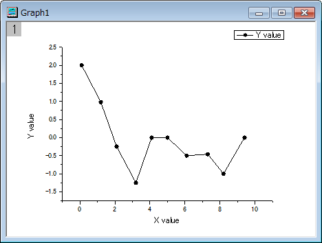
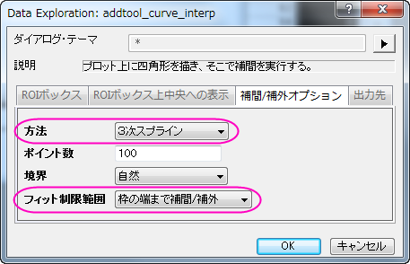
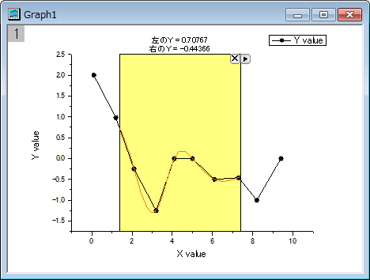
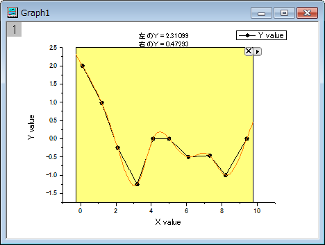
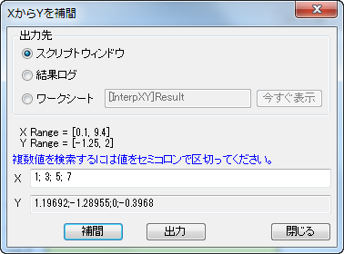

補間ガジェット
Interpolate-Gadget
概要
Originはグラフがアクティブなときに補間ガジェットを使用するとROI（関心のある範囲）ボックスの範囲内で簡単な補間を実行します。ROIボックスを移動すると、補間する範囲を簡単に変更できます。
学習する項目
- 矩形領域内のデータポイントを簡単に補間する方法
- 任意のX値から補間されたY値を素早く検索する方法
- 補間値をスクリプトウィンドウや結果ログ、特定のワークシートに出力する方法
ステップ
このチュートリアルは、チュートリアルデータプロジェクト（<Origin EXE フォルダ>\Samples\TutorialData.opj）と関連しています。
- TutorialData.opj を開き、プロジェクトエクスプローラでInterpolate Gadget フォルダを開きます。
- ワークブックBook1Rで列Aと列Bを選択し、線＋シンボルグラフを作図します。

- グラフをアクティブにしてから、Originメニューでガジェット：補間を選び、Interpolate: addtool_curve_intepダイアログを開きます。
- 補間/補外オプションタブを開きます。方法では3次スプラインを選択し、フィット制限範囲では枠の端まで補間/補外を選択します。

- OKボタンをクリックします。すると、グラフに補間曲線が追加されます。そして、補間線の左右両端のY値は矩形領域の上に表示されます。

- データ範囲は黄色いROIボックスを移動およびサイズ変更で簡単に変更でき、補間曲線はROIボックスを移動するごとに更新されます。
三角形ボタン をクリックし、プロット群の最大範囲に拡大するをフライアウトメニューから選択し、曲線全体を補間します。
をクリックし、プロット群の最大範囲に拡大するをフライアウトメニューから選択し、曲線全体を補間します。

- このガジェットは特定のx値からy値の補間値を出力することもできます。三角ボタンをクリックし、X/Yの補間を選択し、XからYを補間ダイアログを表示します。複数のX値を入力して補間ボタンをクリックします。このツールで各X値から補間されたY値を出力します。

- 補間されたY値はスクリプトウィンドウ、結果ログ、特定のワークシートのいずれかに出力できます。